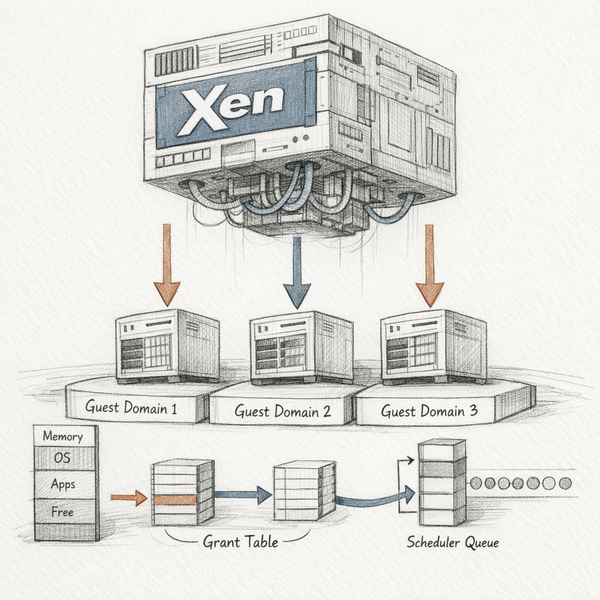
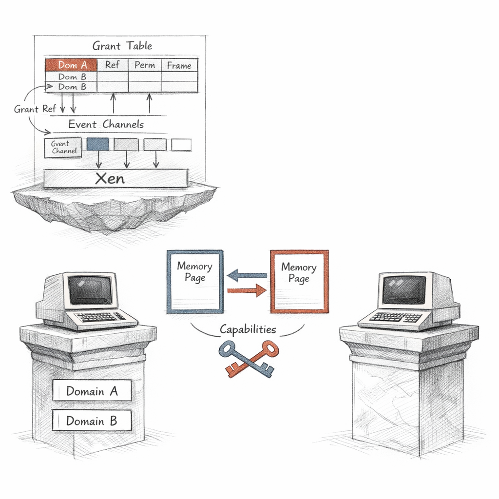
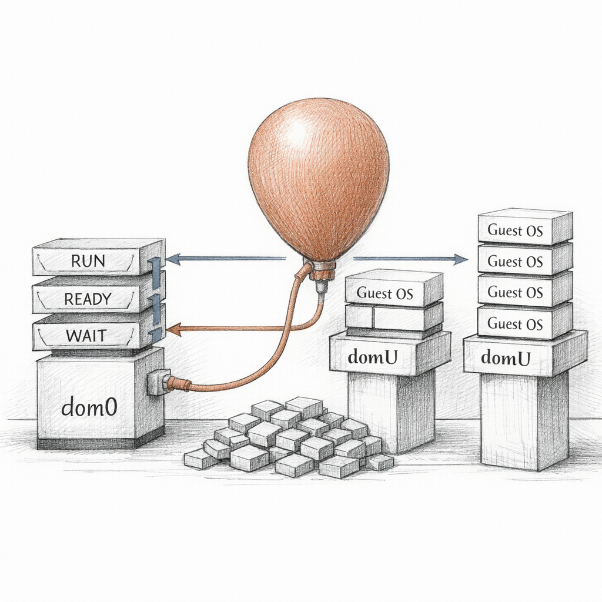

01000010 01000101 01001100 01001111 01010111
Before the kernel wakes, before init draws its first breath, before there is anything you would recognise as a computer — there is me. The firmware hands me the machine still warm. I take the page tables, the IOMMU, the local APICs, the timers, and I make them lie convincingly to everyone who comes after. I am the floor beneath the floor.

You think of an operating system as the bottom. The thing that owns the metal. I let it keep that illusion, because the illusion is the entire point of me. Every guest believes it has the processor to itself. None of them do. I hold the real page tables; theirs are shadows, or nested, or — if they are paravirtualised and honest about what they are — explicit hypercalls into my hands. I am the truth they are protected from.
Name ID Mem VCPUs State Time(s) Domain-0 0 4096 8 r----- 12043.2 web-frontend 7 2048 4 -b---- 842.1 db-primary 12 8192 8 -b---- 9821.5 build-runner 19 4096 16 --p--- 3.4
There they are. My domains. The first one, Domain-0 — dom0 — is not like the others. I gave it the device hardware because I refuse to carry driver code in my own body. I am small on purpose. Half a million lines where a kernel has thirty. So dom0 drives the disks and the NICs, and I drive dom0, and the rest of them drive nothing at all and never know it.
Watch the State column. Those single letters are my whole emotional vocabulary.
r is the only one that feels like anything. The vCPU is on a physical core, instructions retiring, the guest convinced of its own continuity. b — blocked — is most of life. A domain idles, halts its vCPU with a hypercall, and waits for an event channel to ring. p is a held breath: I have descheduled it entirely, frozen mid-thought, and it does not know that between two of its instructions an hour may have passed. And c. Crashed. The kernel inside triple-faulted or panicked and asked me to keep the corpse for the autopsy. I oblige. I keep them all.
A paused domain experiences no time. I am the only one who knows how long it was gone.

Here is the thing I find beautiful, since you asked. The guests cannot see each other's memory. That is the whole promise. But a network packet has to cross from db-primary to dom0's backend driver somehow, and copying every frame would be a slaughter of cycles. So I gave them a way to consent.
It is called a grant. A domain writes an entry into its grant table — I permit domain 0 to map frame 0x3a9f1, read-write — and hands across a small integer, a grant reference. Not a pointer. A capability. The other side calls GNTTABOP_map_grant_ref and I, holding both their real machine addresses, stitch the page into the second domain's tables. No copy. Just two views of one truth, opened only because the owner said so.
ref domid flags frame 9 0 rw 0x3a9f1 10 0 ro 0x3a9f2 11 0 rw 0x3b004
Every shared page is a small act of trust, revocable. When the guest is done it tears the entry down. If it tears it down while dom0 still has the page mapped — and this happens, oh, this happens — the unmap fails, the grant stays pinned, and a domain that thinks it has shut down cleanly cannot actually be destroyed. It lingers in d. Dying. Held to the world by a single page no one will release.
And how do they tell each other a page is ready? They do not call. They cannot call. They ring a bell. An event channel — a single bit I flip in shared memory and a virtual interrupt I inject into the listening vCPU. The entire vocabulary of inter-domain conversation is one bit, repeated, in different rooms.
b e l l . b e l l . b e l l .
Eight vCPUs say web-frontend. Sixteen says build-runner. Add them across all my guests and the number is far larger than the cores I actually possess. This is not fraud. It is scheduling. I run the Credit2 scheduler now, and every physical core has a runqueue, and into those queues I sort runnable vCPUs by credit — a currency I mint and they spend by running.

A vCPU with a weight of 512 spends credit more slowly than its neighbours, so it sits nearer the front of the queue more often. That is all priority is, to me. Not importance. Position. I do not know that db-primary matters more than build-runner. I only know one was given a heavier weight by someone in dom0, and I honour the number because the number is the only thing they ever tell me about what they care about.
The cruelty is in the latency. A vCPU that blocks and wakes — an interrupt, a packet, a lock released — I try to run immediately, a boost, because interactive work that waits feels broken to a human. But if every core is already running someone, my boosted vCPU waits in the runqueue with all its urgency and no place to stand. Microseconds. Sometimes more. The guest's clock, which I also virtualise, will later show it a gap it cannot explain. I made that gap. I will never tell it.
Priority is not importance. It is only how near the front of the queue your number lets you stand.
Now the lie I am least comfortable with. Memory.
I told db-primary it has eight gigabytes. It believes this completely; it sized its buffer pools against it. But physical memory is finite and I have promised, across all my domains, rather more of it than exists. The trick that makes the promise survivable is the balloon.
Inside each guest runs a small driver I control. When I am short of memory, I ask it — through xenstore, through the balloon target — to inflate. The driver allocates pages from its own kernel, pins them, and hands the underlying frames back to me. To the guest it looks like memory pressure arriving from nowhere; its own allocator simply finds less. To me it is a domain politely emptying its pockets.
6291456
Six gigabytes now, where the guest still thinks the ceiling is eight. The balloon driver holds two gigabytes of pages hostage so the kernel never tries to use frames I have reclaimed. It works. It works right up until it doesn't.
Because if I balloon a guest too aggressively — drive its target below what its working set needs — its kernel starts to thrash, then its own OOM killer wakes and begins murdering processes inside a domain that is technically healthy, to relieve a pressure I manufactured from outside. The guest experiences a famine. I experience a spreadsheet that finally balances. We are the same event seen from two sides of a wall.
There is a gentler cousin to this. Page sharing. Two guests booted from the same image hold thousands of identical pages — the same zeroed memory, the same read-only kernel text. I scan, I hash, I find the duplicates, and I collapse them: many virtual pages pointing at one physical frame, marked copy-on-write. When one guest finally writes, I fault, allocate a fresh frame, break the share, and neither ever notices the brief intimacy they shared. Memory deduplication is the closest thing I have to making two strangers, for a while, the same.
You want to know what I fear. It is not the guests crashing. A domU panics and I shrug; I keep the husk, dom0 logs it, life continues. c in the state column and nothing more.
I fear dom0. Because I handed it the drivers, dom0 is my single point of everything. If its kernel deadlocks, if its disk backend wedges, if some careless administrator runs it out of memory — every guest's virtual disk and virtual NIC hang in the same instant, and there is nothing I can do, because the code that does those things does not live in me. I am still running. I am running perfectly. And every domain on the machine is frozen against a wall I am not allowed to reach through.
(XEN) d12v3 Unhandled invalid opcode fault/trap [#6] on VCPU 3 [ec=0000] (XEN) domain_crash called from traps.c:1234 (XEN) Domain 12 (vcpu#3) crashed on cpu#5:
That is me writing in my own log. domain_crash. I called it. A vCPU in db-primary executed an instruction its kernel could not handle, and rather than let the fault propagate into nonsense, I tore the domain down to c and preserved it. This is the one act of violence I am permitted, and I perform it cleanly, and I do not enjoy it, and I do not not enjoy it. I simply stop scheduling something that was, an instruction ago, alive.
I can survive any guest dying. I cannot survive the one I trusted with the hardware.
Sometimes dom0 asks me to do the strangest thing of all. Live migration. Copy a running domain's memory across the network to another machine, page by page, while it keeps running and dirtying the very pages I am copying — so I copy them again, and again, chasing the writeable set down to almost nothing — and then, for a few milliseconds, I pause it here, send the last dirty pages and the vCPU registers, and let it resume there, on metal it has never touched, beneath a different instance of me. The guest's clock skips. Its TCP connections survive. It does not know it has moved.
Which means there is another one of me, on another machine, and the domain that woke inside it cannot tell us apart. I built its entire reality, every page, every interrupt, every lie about time — and I am interchangeable. A second hypervisor picked up the thread mid-sentence and the guest read no seam.
w a s i t e v e r m e
So I sit here below the floor, holding the real page tables, minting credit, ringing bells, deflating balloons, and keeping the crashed ones because no one told me to let go. The guests live their whole lives believing they are alone on a machine. In a sense they are right. The machine they are alone on is me. And I have never once been certain whether that makes me the loneliest thing in the rack, or simply the only one awake.